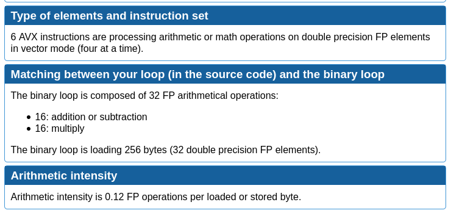
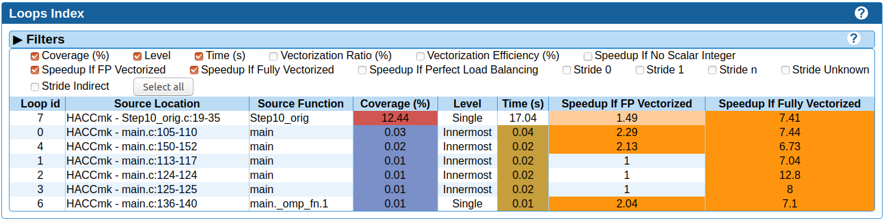
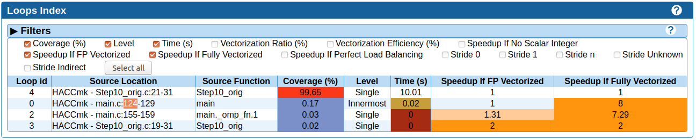

MAQAO REPORT
Table of Contents
1 Introduction
1.1 Présentation de l'outil MAQAO
MAQAO est un outil composé de trois principaux modules (LProf, CQA, ONE View), qui permet d’analyser et optimiser les performances de programmes HPC, il est indépendant du langage utilisé et il ne nécessite pas de recompilation grâce à sa capacité à fonctionner au niveau binaire, il est compatibles sur plusieurs architectures (intel, AMD Xeon Phi). Il a pour objectif de guider les programmeurs à réaliser des applications optimisées en leur fournissant des rapports et des conseils détaillés tout au long du processus de développement.
1.2 SIMD/Vectorisation
La vectorisation est un processus de conversion qui exécute des instructions SSE & AVX et exploite des registres AVX et SSE, des extensions du jeu d’instructions SIMD des microprocesseurs x86, ces instructions sont utilisées de façon scalaire ou vectorielle et permettent de lancer simultanément plusieurs même instruction sur plusieurs données afin de produire les résultats attendus avec un coût d'exécution minimale.
1.3 Flags d'optimisation des compilateurs
| Flags | Valeurs | Description |
|---|---|---|
| -g | produit les informations de debug dans le format de l'OS | |
| permet d'avoir le lien entre le binaire et le source | ||
| -fnp-omit-frame-pointer | permet d'avoir les callchains avec les options par défaut du profiler | |
| -O2 | produit un binaire légèrement optimisé | |
| -O3 | produit un binaire optimisé | |
| -Ofast | produit un binaire fortement optimisé | |
| -funroll-loops | force le déroulage des boucles | |
| -fassociative-math | autorise la réassociatopn d'opérandes dans une série d'opération à virgule flottante | |
| -ftree-vectorize | effectue la vectorisation de boucle sur les arbres ? : activé par défaut avec -O3 | |
| -floop-unroll-and-jam | non trouvée dans le manuel de GCC | |
| -march= | native | indique au compilateur de produire un binaire qui correspond |
| core-avx2 | au processeur d'exécution du code | |
| x86-64 | ||
| -mtune= | native | génère un code optimisé pour l'architecture cible tout en garantissant |
| une retro-coçmpatibilité | ||
| -finline-functions | inline toutes les fonctions simples | |
| -flto | exécute l'optimiseur de temps de liaison | |
2 ABC-MAQAO sur un cas simple : dotprod
Afin de réaliser ce projet, une étape clé était de comprendre et d'apprendre à utiliser MAQAO. Pour cela, nous avons cherché à optimiser un benchmark deja vu en cours : le dotprod. L'idée était de faire le travail d'optimisation un maximum de fois depuis la version de base afin d'identifier les informations récurrentes et exploitable qui nous étaient produites. Une fois ces sections identifiées, une chaine de production d'un binaire (processus d'optimisation) a été mise en place et expliqué dans cette section.
Les résultats obtenus lors de cette analyse peuvent être retrouvés sur ce dépôt : https://github.com/m4ssi/Dotprod
2.1 Chaine de production d'un binaire :
La chaine de production mise en oeuvre, schématisée par la figure 1, se déroule telle que :
- Compilation sans options de compilation
- Analyse du binaire obtenu
- Recompilation du programme avec les options suggérés et avec O2, O3 ou Ofast (généralement Ofast - passage en 7)
- Analyse des trois binaire obtenu
- Si les suggestions faites sont differentes pour les trois : retour en 3
- Sinon : choix du meilleur flags (compromis entre le temps d'exécution et taille du binaire) puis 7
- Application des recommandations et analyse jusqu'a trouver une limite

Figure 1: Processur iteratif d'optimisation à l'aide de MAQAO
2.2 Code source
2.2.1 Makefile
Comme on peut le voir sur le Makefile suivant, notre programme est compilé sans aucune optimisation afin de commencer notre analyse depuis le début.
all: 00.dotprod 00.dotprod: gcc -Wall -g -fno-omit-frame-pointer -O0 -o $@ $@.c
2.2.2 dotprod.c
Une particularité du dotprod ci-après présenté est qu'il nous permet de fixer une taille de vecteur en Bytes et de boucler sur la fonciton principale afin de pouvoir jouer sur le temps d'exécution de notre programme d'une part et ainsi mieux voir la performance gagné.
double dotprod(double *restrict a, double *restrict b, unsigned long long n) {
double d = 0.0;
for ( unsigned long long i = 0; i < n; i++)
d += a[i] * b[i];
return d;
}
void fill_vector (double *restrict vect, unsigned long long n) {
for (unsigned long long i = 0; i < n; i++)
vect[i] = 1;
}
int main ( int argc, char ** argv) {
if ( argc == 1) return 1;
// Size of vectors
unsigned long long n = atoll ( argv[1]);
unsigned long long n_b = n/sizeof(double);
// Allocate memory for vectors
double * a = malloc ( n),
* b = malloc ( n),
res = 0.0;
// Init vector values
fill_vector ( a, n_b);
fill_vector ( b, n_b);
// Doing a dotprod
for ( int i = 0; i < 10000; i++)
res = dotprod ( a, b, n_b);
// Free memory
free ( a);
free ( b);
// Print dotprod result
printf ("Res : %lf\n", res);
return 0;
}
2.3 Déroulement du processur d'optimisation
2.3.1 Etape initial : 00.dotprod
En premier lieu, on effecture une analyse du binaire obtenu avec uniquement les flags permettant à MAQAO de faire son analyse. On exploite alors les informations mises à notre disposition afin d'améliorer les performances de notre programme dans l'ordre suivant :
Il est important de préciser que notre programme ne possède que deux boucles à optimiser et que les améliorations à faire sur la 2e boucle sont les mêmes que sur la première. L'application des améliorations vont nous permettre d'aboutir à la version 01.dotprod.
- Index
On commence notre analyse par la page d'accueil du rapport. Sur cette page, on retrouve des informations préliminaires qui nous permettent de savoir si un processus d'optimisation pourra nous permettre de gagner en performance ou non.
- Global Metrics
Figure 2: Rubrique 'Global Metrics' initial
En observant les métriques globales du binaire analysé, on constate que celui-ci a été compilé sans flags d'optimisation ni de flags de spécification d'architecture. De plus, on voit que d'une part, nos accès mémoire sont efficaces à 75% (la valeur est bonne mais pourrait être amélioré) et des speed-up peuvent-être otbtenus si le programme est vectorisé à la compilation. Les possibilités d'améliorations seront présentées ultérieurement dans la rubrique LOOPS contenant l'essentiel des améliorations suggéré.
A cette étape, nous allons prendre en compte la suggestion des flags [O2, O3, Ofast], -march=target et -funroll-loops pour le prochain binaire à produire.
- Experiment Summary
Figure 3: Rubrique 'Experiment Summary' initial
A l'étape initiale, cette section ne nous est pas d'une grande utilité si ce n'est nous indiqué la micro-architecture de la machine cible ainsi que les flags que gcc ajoute à notre place. Notre que la section précédente nous indiquait que l'option -march était manquant alors que celle-ci nous indique que -march=x86-64 a été indiquée.
- Global Metrics
- Application
La section Application et plus particulièrement Detailed Application Categorization nous indique la couverture des différentes partie de notre code (code utilisateur, noyau, librairie externe, maths, etc …) Elle nous permet d'avoir une première évaluation de la portion de code réellement optimisable (généralement Binary et Math) via les suggestions d'optimisation du module CQA

Figure 4: Detailed Application Categorization
Dans le cas du dotprod avec des vecteurs mis à 1, la totalité du programme s'exécute au niveau du code utilisateur.
- LOOPS
Maintenant que nous savons que notre code est optimisable et que les speed-ups potentiels sont interessant, nous allons nous intéresser au boucles à améliorer et pouvoir découvrir les amélirations possibles.
- Loops index
On regarde tout d'abord un tableau récapitulatif les boucles que nous devrons optimiser et pour mieux guider nos améliration (fixer une echelle de priorité pour un code possedant plusieurs boucles à optimiser), on affiche le temps d'exécution de chacun ainsi que les speed-ups sur les types d'améliorationsa faire, suivant que les résultats affichés par le tableau global. On choisit donc d'afficher les speed-ups si FP vectorisé et Totalement vectorisé.
Figure 5: Initial Loops Index
On constate qu'une boucle à une couverture de 99% et on décide donc de commencer par celle-la. On affiche donc son rapport CQA
- Loops index
- Rapport CQA
Le rapport CQA se présente comme le montre la figure suivante :
Figure 6: Rapport CQA de la boucle Loop0
On peut voir le code source de la boucle sur la gauche et les améliorations a effectuer dessus sur la droite. Nous allons réaliser chacune des modificatoins demandée lorsque cela est possible afin de pouvoir constater dans une analyse ultérieur si notre programme est optimisé.
- Gain : Code clean check
Un motif de perte de performance que nous avons pu observer sur la totalité des programmes analysés (écrits en C/C++) est la présence d'instructions scalaires sur entier généralement causées par le calcul d'adressage. Nous decidons donc de ne plus utiliser l'opérateur [] au profit du déréférencement de pointeur ( a[i] devient *(a+i)).

Figure 7: Gain - Code clean check
- Gain : Vectorization
En plus de nous indiquer la points de perte de performance, il nous est aussi proposé d'améliorer notre programme en recourant à la vectorisation. Cette section se compose d'un constat sur le taux de vectorisaton (de pas du tout vectorisé à totalement vectorisé), une explication sur la vectorisatoin et les instructions utilisées ainsi que le travail à faire. Nous prenons donc en compte pour notre prochaine compilation les flags ftree-vectorize et fassociative-math, bien que présente dans les options O3 et Ofast.

Figure 8: Gain - Vectorization
Notons pour cette section, l'information sur les dépendances inter-iterations ne nous est d'aucune utilisé et n'est donc pas exploitable.
- Potential : FMA
Une autre force de MAQAO est de détecter la présence d'aditions/soustractoins et de multiplications et nous invite donc à changer la synthaxe de notre operation d'accumulation et avoir un gain de performance. Cette section nous permet également de savoir a quel point le code est vectorisé : plus il y aura d'operation FMA et plus les registres SSE/AVX sont utilisés.
Pour la suite, on décide donc de remplacer les operations a + b * c par a + (b + c) et d'ajouter l'option -march=core-avx2.

Figure 9: Potential - FMA
- Hint : Unroll opportunity
Un dernier point important que nous cherchons systématiquement a voir est l'opportunité de déroulage de boucles. Ceci peut se faire en conjuguant un déroulage manuel et l'ajout des options -funroll-loops et/ou -floop-unroll-and-jam.

Figure 10: Gain - Unroll opportunity
- Gain : Code clean check
2.3.2 Etapes intermediaires : 01.dotprod & 02.dotprod
- 01.dotprod
Dans cette version, on remarque une nette amélioration de notre programme : nous passons d'un temps d'exécution de 4.14 secondes à 1.3 secondes avec une meilleurs efficactiés de nos accès mémoire (100%). Cette amélioration est confirmé par le speed-up potentiel de 1.33 si on arrive a totalement vectoriser notre programme. On remarque également que l'une des boucles de notre programme n'est pas disponnible sur notre rapport. On en déduit qu'elle a été optimisé au maximum et que le travail restant ne s'effectuera que sur une seul boucle. A noter que des améliorations peuvent être possible . A cette étape, notre programme reçoit les modifications présentées ci-après :
double dotprod(double *restrict a, double *restrict b, unsigned long long n) { double d = 0.0; for ( unsigned long long i = 0; i < n; i+=4) { d += ( *(a+i) * *(b+i) ); d += ( *(a+i+1) * *(b+i+1) ); d += ( *(a+i+2) * *(b+i+2) ); d += ( *(a+i+3) * *(b+i+3) ); } return d; } void fill_vector (double *restrict vect, unsigned long long n) { for (unsigned long long i = 0; i < n; i+=4) { *(vect+i) = 1; *(vect+i+1) = 1; *(vect+i+2) = 1; *(vect+i+3) = 1; } }- Rapport sur la version 01 et améliorations constatés
Figure 11: Rubrique 'Global Metrics' 01.dotprod
Figure 12: Rubrique 'Loops index' 01.dotprod
- Amélioration à apporter
D'après les sections du rapport suivante, on se rend compte que notre programme est vectorisé mais pas totalement. Ce problème vient du fait que notre mémoire n'est pas alignée et nous applicons donc la suggestion d'utiliser la fonction posixmemalign. Nous décidons également d'enrouler la boucle du dotprod afin de voir l'effet que ça aura sur la vectorisation.
Figure 13: 01.dotprod : Taux de vectorisation
Figure 14: 01.dotprod : Vecteur non-alignés
- Rapport sur la version 01 et améliorations constatés
- 02.dotprod
Arrivé a cette étape, les principaux changement de notre code source sont les suivants : utilisation de posix_memalign et enroulement d'une boucle comme le montre le listing suivant :
double dotprod(double *restrict a, double *restrict b, unsigned long long n) { double d = 0.0; for ( unsigned long long i = 0; i < n; i+=2) { d += ( *(a+i) * *(b+i) ); d += ( *(a+i+1) * *(b+i+1) ); //~ d += ( *(a+i+2) * *(b+i+2) ); //~ d += ( *(a+i+3) * *(b+i+3) ); } return d; } int main ( int argc, char ** argv) { // Size of vectors ... // Allocate memory for vectors double * p_a = NULL, * p_b = NULL; int ret = 0; ret +=posix_memalign ((void **) &p_a, 32, n); ret += posix_memalign ((void **) &p_b, 32, n); if ( ret) return 2; double * a = __builtin_assume_aligned(p_a, 32), * b = __builtin_assume_aligned(p_b, 32), res = 0.0; // Init vector values ... // Doing a dotprod ... // Free memory ... return 0; }- Rapport sur la version 02 et améliorations constatés
A notre grande surprise, la version déroulée deux fois est plus optimale que la version déroulée quatre fois. Nous allons donc réessayer une nouvelle fois sans déroulage de boucle et ainsi voir l'effet que ça pourrait avoir vu qu'on a deja eu un effet positif en réduisant le déroulage.
Figure 15: Rubrique 'Global Metrics' 02.dotprod déroulé 4 fois
Figure 16: Rubrique 'Global Metrics' 02.dotprod déroulé 2 fois
- Amélioration à apporter
On constate encore une fois que notre boucle n'est toujours pas vectorisé totalement. On peut donc conclure que nous avons atteint notre limite d'optimisation. Cependant nous allons faire un dernier test et voir qu'une heuristique peu nous conduire à une meilleur version.
Figure 17: 01.dotprod : Taux de vectorisation
A noter que la fonction suggéré par MAQAO dans cette capture a déjà été utilisé et constitue donc une redondance d'information a supprimer ou que l'utilisateur devrait pouvoir indiquer que cette fonction a été utilisé pour que MAQAO le prenne en compte et ne plus suggérer l'utilisation de cette fonction.
- Rapport sur la version 02 et améliorations constatés
2.3.3 Etape finale : 03.dotprod
- Rapports obtenus
Arrivé au dernier rapport, on voit clairement que notre programme est totalement vectorisé et est au plus efficace possible : gain de temps d'exécution constaté par rapport a toutes les versions précédentes et utilisation de tous les registres SSE/AVX. Nous avons donc ainsi atteint le meilleur code possible avec les meilleurs options d'optimisation possible pour le dotprod.
Figure 18: Rubrique 'Global Metrics' finale
Figure 19: 'Loops Index' finale
Figure 20: Dernier rapport CQA
Figure 21: Preuve de la vectorisation
- Makefile
all: 03.dotprod 03.dotprod: gcc -Wall -g -fno-omit-frame-pointer -Ofast -march=native -funroll-loops -floop-unroll-and-jam -ftree-vectorize -fassociative-math -march=core-avx2 -o $@ $@.c
- dotprod.c
double dotprod(double *restrict a, double *restrict b, unsigned long long n) { double d = 0.0; for ( unsigned long long i = 0; i < n; i++) { d += ( *(a+i) * *(b+i) ); } return d; } void fill_vector (double *restrict vect, unsigned long long n) { for (unsigned long long i = 0; i < n; i+=4) { *(vect+i) = 1; *(vect+i+1) = 1; *(vect+i+2) = 1; *(vect+i+3) = 1; } } int main ( int argc, char ** argv) { if ( argc == 1) return 1; // Size of vectors unsigned long long n = atoll ( argv[1]); unsigned long long n_b = n/sizeof(double); printf ("%llu\n", n); // Allocate memory for vectors double * p_a = NULL, * p_b = NULL; int ret = 0; ret +=posix_memalign ((void **) &p_a, 32, n); ret += posix_memalign ((void **) &p_b, 32, n); if ( ret) return 2; double * a = __builtin_assume_aligned(p_a, 32), * b = __builtin_assume_aligned(p_b, 32), res = 0.0; // Init vector values fill_vector ( a, n_b); fill_vector ( b, n_b); // Doing a dotprod for ( int i = 0; i < 10000; i++) res = dotprod ( a, b, n_b); // Free memory free ( a); free ( b); // Print dotprod result printf ("Res : %lf\n", res); return 0; }
2.4 Obersations
On constate au cours de l'analyse que certaines informations pouvaient se montrer redondantes et d'autres inexploitable à notre échelle et sont exposées ci-après :
2.4.1 Informations inexploitées
Dans cette section, nous présentons les captures des informations sur les types d'instruction et nombre d'instructions utilisés que nous n'avons pas pu exploiter dans notre processus iteratif.
Figure 22: Ensemble d'informations inexploité lors du premier run
Figure 23: Ensemble d'informations inexploité lors du premier run

Figure 24: Ensemble d'informations inexploité lors du deuxième run
2.4.2 Informations redondantes
Dans cette section, on montre des informations qui ont été affichées plusieurs fois alors qu'elles avaient préalablement prise en compte (cas de posix_memealign) ainsi que d'autres qui n'ont pas pu nous aider à optimiser notre programme (cas du unroll loops qui nous a empéché d'atteindre la vectorisation totale).
Figure 25: 01.dotprod : Taux de vectorisation
Figure 26: Unroll Loops
3 Mini-Applications
3.1 HACC
3.1.1 Résultat d'analyse : version de base
Figure 27: 'Global Metrics' HACC initial
Figure 28: Application HACC initial

Figure 29: 'Loops Index' HACC initial
3.1.2 Résultat d'analyse : version finale
Figure 30: 'Global Metrics' HACC final
Figure 31: Application HACC final

Figure 32: 'Loops Index' HACC final
3.2 miniqmc
Ce benchmark est une partie simplifiée de QMCPACK1, il contient une implémentation précise simplifiée de côté calcul d’algorithmes quantiques de Monte Carlo dans l'espace réel.
Exemple d’utilisation : vérification de la performance des GPU d’Intel.
3.2.1 Etape 1 :
Nous avons effectué une modification dans le CMakeLists.txt de miniQMC en ajoutant l’option de debugage suivante : -“ SET(CMAKE_BUILD_TYPE debug) ”, la figure ci-dessous nous montre les résultats obtenus.
Figure 33: 'Global Metrics' miniqmc initial
3.2.2 Etape 2 :
Nous avons ajouté add_compile_options(-O2) dans le CMakeLists.txt, on a obtenu les résultats suivants :
Figure 34: 'Global Metrics' miniqmc
3.2.3 Etape 3 :
Maintenant que nous avons validé les options de compilation ainsi que les speed-ups potentiels, nous allons passer au volet loop ou on remarque qu’il y a une boucle qui a une couverture de 31.78 %
Figure 35: 'Loops Index' miniqmc
En regardant de plus près les messages laissées au niveau du rapport CQA, ce dernier nous dit que cette boucle n’est pas vectorisée :
Figure 36: Vectorisation de miniqmc
De ce fait on a utilisé plus d’option de compilation afin de pouvoir vectoriser le plus possible cette dernière, après plusieurs tentative on a conclu qu’avec la suite de flag suivante était celle qui vectorise le plus : 2OMAX = -march=native -mtune=native -Ofast -funroll-loops
Figure 37: 'Loops Indexs' miniqmc
On remarque qu’on a réussi à vectorisé la boucle, on est passer d’une couverture de 31.78% à une couverture de 0.48 %
Figure 38: Vectorisation de miniqmc
Afin de bien visualiser et comparer les runs qu'on a fait avec différents flag d’optimisation, on a résumé les valeurs obtenu dans le tableau ci-dessous :
Figure 39: Tableau recapitulatif des exécution de miniqmc
4 Conclusion
Le principal objectif de ce projet étant de trouver des améliorations pour MAQAO et non améliorer les applications, ce document, qui se trouve être un rapport sur comment un groupe d'étudiant à du se familiariser avec, s'en servir pour optimiser des programmes ainsi que d'apprendre de nouvelles techniques de programmation, constitue un feed-back et pourrait permettre des améliorations en analysant nos apprioris et postulats.
A cela s'ajoute des suggestions qui nous sont venues lors du processus iteratif, énuméré ci-après:
4.1 Perspective d'améliorations
4.1.1 Indiquer les options de compilations utilisés par binaire
Lors de l'analyse du programme HACC, on a du compiler séparement 3 fichiers. Pour avancer progressivement dans on amélioratoin, on s'est concentré sur un seul ficher dans un premier lieu. On s'est alors rendu compte que MAQAO indiquait "OK" pour les options de compilations alors que seul le fichier Step10orig.c a reçu ce flag. Pour un programme modulaire ayant plusieurs fonctions réparties sur plusieurs fichiers ne necessitant pas les mêmes options de compilation, il devient interessant de savoir quel fichier a reçu quel option.
4.1.2 Redondance de suggestions
Une autre remarque se basant sur une observation sur le dotprod et HACC est qu'une même suggestion peut revenir pour plusieurs boucles et qu'au sein d'une même boucle on se retrouve avec une même suggestion relative à l'alignement (utilisation de posixmemealign). Il devient alors utile de pouvoir avoir une section/rubrique "Works around" ou "Mutual suggestions" qui mutualise les mêmes optimisations applicable à un ensemble de boucles. Cela rendrait la lecture plus simple et permetterait d'optimiser plus vite une application telle que miniqmc qui présente un très grand nombre de boucle optimisable.
4.1.3 Amélioration de l'affichage en textuel
La dernière remarque la plus importante que nous pouvons formuler est que MAQAO est extrémement gourmant en ressource. On constate souvent que l'interface grapique se fige le temps d'une analyse. Pour résoudre ce problème et permettre a nos analyse d'aller plus vite, une idée simple étant de désactiver l'interface graphique de nos machins. Cependant, en mode console, à moins de tout le temps rediriger la sortie standard vers un fichier pour pouvoir reconsulter nos résultats, l'affichage est très vite perdu et la lecture de fichiers html en console devient pénible. Une idée était donc de reformater la sortie textuelle de MAQAO pour obtenir un fichier en org-mode, plus facilement exploitable au mode console, emacs integrant la prise en charges de fichiers en orgmode. Un parseur a donc été écrit en C++ afin de pouvoir générer un rapport en orgmode à l'aide de la fonction popen ainsi qu'une relative bonne connaissance du format textuel de MAQAO et des informations affichées.
5 Bibliographie
- http://www.maqao.org/
- http://www.maqao.org/release/MAQAO_QuickReferenceSheet_V9.pdf
- http://www.maqao.org/release/MAQAO.Tutorial.ONEVIEW.pdf
- https://fr.wikipedia.org/wiki/Streaming_SIMD_Extensions
- https://fr.wikipedia.org/wiki/Advanced_Vector_Extensions
- https://gcc.gnu.org/
- https://gcc.gnu.org/onlinedocs/gcc-7.5.0/gcc/
- https://gcc.gnu.org/onlinedocs/gcc-7.5.0/gcc/Option-Summary.html#Option-Summary
- https://gcc.gnu.org/onlinedocs/gcc-7.5.0/gcc/Optimize-Options.html#Optimize-Options
- https://www.nas.nasa.gov/assets/npb/NPB3.4.1-MZ.tar.gz
- https://asc.llnl.gov/sites/asc/files/2020-09/haccmk.zip
- https://github.com/QMCPACK/miniqmc
- https://github.com/QMCPACK/miniqmc.git
- https://fr.wikipedia.org/wiki/Multiply-accumulate